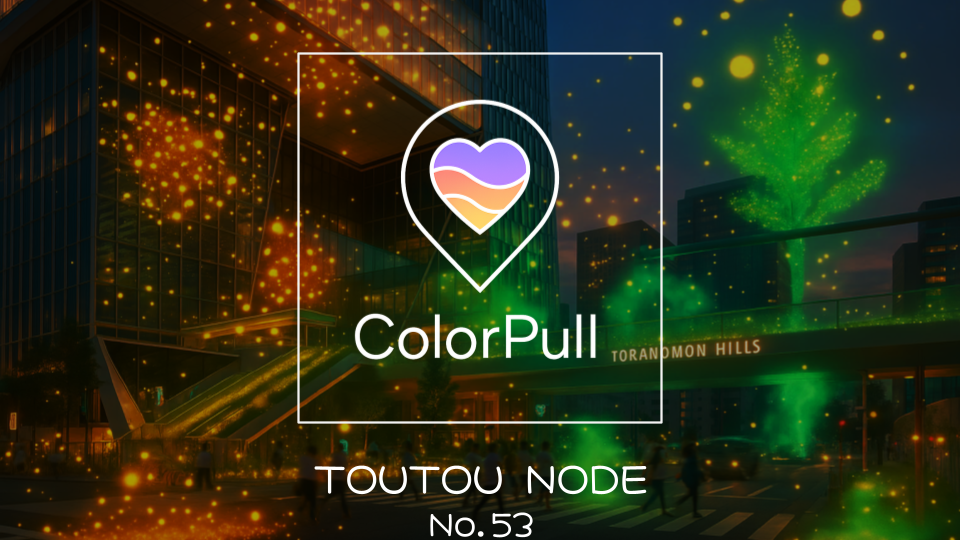

ColorPull
Artificial Synesthesia Media
Concept
訪れる地で視て、聴いて、感じる。空間と想いが共鳴する、“人工共感覚メディア”
See, hear, and feel the places you visit. An "artificial synesthesia media" where space and emotion resonate.
Overview
情報過多な現代において、読解コストを最小化しつつ情報価値を最大化する次世代SNSソリューション、それが「ColorPull」です。
都市空間に残された人々の感情や想いを、独自のアルゴリズムで「色」に変換。直感的に理解可能な「第六感UI」を通じて、空間に漂う残留思念（感情の式）を可視化します。
「記録」された情報ではなく、その場にある「空気感」や「気配」を色として感じることで、ユーザーは押し付けられたレコメンドではなく、自らの感性で街を探索し、共鳴する情報を発見することができます。
In today's era of information overload, "ColorPull" is a next-generation SNS solution that minimizes reading costs while maximizing information value.
It converts people's emotions and thoughts left in urban spaces into "colors" using a unique algorithm. Through an intuitively understandable "sixth sense UI," it visualizes the lingering thoughts (emotional equations) drifting in the space.
By sensing the "atmosphere" and "presence" of a place as colors rather than "recorded" information, users can explore the city through their own sensibilities and discover resonating information, free from forced recommendations.
